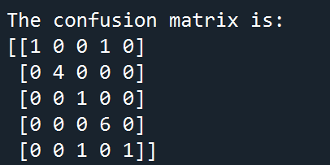
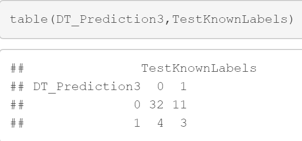

Part 1: Labeled text dataset: I gathered my text dataset from ClinicalTrials.gov API, U.S National Library of Medicine. Since my topic is diabetes, I decide to explore diabetes from five aspects: causes, diagnosis, lifestyle, medications and prevention. So I gathered my corpus according to these 5 keywords. For each keyword, I gathered 10 files and created one wordcloud.
You can download my corpus here:
Textdataset.zipHere is the code used to create wordcloud for visualization:
create wordcloudThen I converted my corpus into a labeled csv dataset. Here is the Python code for cleaning text data from a corpus with labels. (Since this part has been discussed in detail in the data cleaning section, I just put the download link of my code and the labeled result.)
Cleaning Text Data from the corpus with labels
You can download my labeled text dataset here:
Decision Trees by Python for labeled text dataset
First, I used the labeled text dataset to create a training data and a test data. Here is the download of the training data and test data:
Then I seperate labels (remove the labels and save the labels). After doing these, we can create our decision trees! Here is the code preview before we pot the decision trees.
##STEP 1 Create Training and Testing Data
###############################################################
## Write the dataframe to csv so you can use it later if you wish
filename="Textdataset.csv"
Final_News_DF_Labeled=pd.read_csv(filename)
TrainDF, TestDF = train_test_split(Final_News_DF_Labeled, test_size=0.3)
print(TrainDF)
print(TestDF)
#################################################
## STEP 2: Separate LABELS
#################################################
## IMPORTANT - YOU CANNOT LEAVE LABELS ON
## Save labels
### TEST ---------------------
TestLabels=TestDF["LABEL"]
print(TestLabels)
TestDF = TestDF.drop(["LABEL"], axis=1)
print(TestDF)
### TRAIN----------------------
TrainLabels=TrainDF["LABEL"]
print(TrainLabels)
## remove labels
TrainDF = TrainDF.drop(["LABEL"], axis=1)
TestDF.to_csv("TestDF.csv")
TrainDF.to_csv("TrainDF.csv")
To evaluate the decision trees, we need to calculate accuracy against the test set by creating confusion matrics for each DT.
The accuracy for DT1 is: (2+4+1+5+1)/(2+4+1+5+1+1+1)=13/15

The accuracy for DT1 is: (1+4+1+6+1)/(1+4+1+6+1+1+1)=13/15
The accuracy for DT1 is: (1+4+1+2+1)/(1+4+1+2+1+1+4+1)=9/15
Code preview for creating confusion metrics:
from sklearn import metrics
from sklearn.metrics import classification_report
DT_pred1=MyDT1.predict(TestDF)
DT_pred2=MyDT2.predict(TestDF)
DT_pred3=MyDT3.predict(TestDF)
#confision matrix for DT3
print("Prediction\n")
print(DT_pred3)
##
bn_matrix3= confusion_matrix(TestLabels, DT_pred3)
print("\nThe confusion matrix is:")
print(bn_matrix3)
FeatureImp=MyDT3.feature_importances_
indices3= np.argsort(FeatureImp)[::-1]
## print out the important features.....
for f in range(TrainDF.shape[1]):
if FeatureImp[indices3[f]] > 0:
print("%d. feature %d (%f)" % (f + 1, indices3[f], FeatureImp[indices3[f]]))
print ("feature name: ", feature_names3[indices3[f]])
#confision matrix for DT2
print("Prediction\n")
bn_matrix2= confusion_matrix(TestLabels, DT_pred2)
print("\nThe confusion matrix is:")
print(bn_matrix2)
FeatureImp=MyDT2.feature_importances_
indices2= np.argsort(FeatureImp)[::-1]
## print out the important features.....
for f in range(TrainDF.shape[1]):
if FeatureImp[indices2[f]] > 0:
print("%d. feature %d (%f)" % (f + 1, indices2[f], FeatureImp[indices2[f]]))
print ("feature name: ", feature_names2[indices2[f]])
#confision matrix for DT1
print("Prediction\n")
bn_matrix1= confusion_matrix(TestLabels, DT_pred1)
print("\nThe confusion matrix is:")
print(bn_matrix1)
FeatureImp=MyDT1.feature_importances_
indices1= np.argsort(FeatureImp)[::-1]
## print out the important features.....
for f in range(TrainDF.shape[1]):
if FeatureImp[indices1[f]] > 0:
print("%d. feature %d (%f)" % (f + 1, indices1[f], FeatureImp[indices1[f]]))
print ("feature name: ", feature_names1[indices1[f]])
Code download:
I created three dicision trees (DT) after removing the labels. For the first DT, I chose GINI as criterion and 'best' as splitter. For the second DT, I chose Entropy as criterion and 'best' as splitter. For the third DT, I chose Entropy' as criterion and 'random' as splitter. Each node of tree shows GINI.
DT1:
DT2:
DT3:
The DT model gets the final classification result by classifying according to different variables. The results sorted our files very accurately.DT1 and DT2 shared the same root nodes: prevention and the same accuracy as well . As we can see, the third decision tree with different root node-obesity due to random splitter has the least accuracy. The third decision tree is therefore larger than the other two.
Code preview for creating DT:
## STEP 3: Run DT 1
##################################################
## Instantiate
MyDT1=DecisionTreeClassifier(criterion='gini', ##"entropy" or "gini"
splitter='best', ## or "random" or "best"
max_depth=None,
min_samples_split=2,
min_samples_leaf=1,
min_weight_fraction_leaf=0.0,
max_features=None,
random_state=None,
max_leaf_nodes=None,
min_impurity_decrease=0.0,
min_impurity_split=None,
class_weight=None)
##
MyDT1.fit(TrainDF, TrainLabels)
##Visualization
feature_names1=TrainDF.columns
fig1=plt.figure(figsize=(40,30))
Tree_Object1=tree.plot_tree(MyDT1,
feature_names=feature_names1,
class_names='LABEL',
filled=True)
fig1.savefig("DT1.png")
##Run DT 2
MyDT2=DecisionTreeClassifier(criterion='entropy', ##"entropy" or "gini"
splitter='best', ## or "random" or "best"
max_depth=None,
min_samples_split=2,
min_samples_leaf=1,
min_weight_fraction_leaf=0.0,
max_features=None,
random_state=None,
max_leaf_nodes=None,
min_impurity_decrease=0.0,
min_impurity_split=None,
class_weight=None)
##
MyDT2.fit(TrainDF, TrainLabels)
##Visualization
feature_names2=TrainDF.columns
fig2=plt.figure(figsize=(40,30))
Tree_Object1=tree.plot_tree(MyDT2,
feature_names=feature_names2,
class_names='LABEL',
filled=True)
fig2.savefig("DT2.png")
##Run DT 3
MyDT3=DecisionTreeClassifier(criterion='entropy', ##"entropy" or "gini"
splitter='random', ## or "random" or "best"
max_depth=None,
min_samples_split=2,
min_samples_leaf=1,
min_weight_fraction_leaf=0.0,
max_features=None,
random_state=None,
max_leaf_nodes=None,
min_impurity_decrease=0.0,
min_impurity_split=None,
class_weight=None)
##
MyDT3.fit(TrainDF, TrainLabels)
##Visualization
feature_names3=TrainDF.columns
fig1=plt.figure(figsize=(40,30))
Tree_Object1=tree.plot_tree(MyDT3,
feature_names=feature_names3,
class_names='LABEL',
filled=True)
fig1.savefig("DT3.png")
Decision Trees by R for labeled record dataset
I downloaded my labeled record dataset from the Kaggle. The original dataset has 8 variables for predicting whether a patient has diabetes. In this part, I only chose 200 rows and four variables: Blood Pressure, Insulin, BMI and DiabetesPedigreeFunction to create training data and test data. The 'Outcome' is the label in this dataset. '1' represent the positive and '0' represent the negative. Here you can download my record dataset:
By calculating the confusion matrix, we can see the accuracy of the three trees:
Accuracy of DT1=(1+30+5)/(1+30+5+1+9+1+6)=36/53
Accuracy of DT2=(2+33+2)/(2+33+2+1+3+1+12+2)=37/55

Accuracy of DT3=(3+32+3)/(3+32+3+1+11+1+4)=38/55
These three decision trees have very similar accuracy. It is because we chosed the same classification GINI and the default cp value as 0. The only difference is the root node.
I also plot a histgram to show the feature importance of these four variables for diabetes prediction.
The preview of code used for feature importance:
#top features
importance1 = data.frame(important_index1=DT1$variable.importance)
importance1$feature = row.names(importance1)
row.names(importance1) = NULL
importance1 = sort(importance1,decreasing = TRUE)
ggplot(importance1,
aes(y = important_index1, x = feature)) +
geom_bar(stat = "identity", fill = "lightblue", colour = "black")
Here you can download my R code:
I used 3/4 size of the record dataset for training data and the remaining 1/4 for test data. After removing the labels and saving them we can create the decision trees. I created three dicision trees to train my training data. For these DT, I used default classification 'GINI'. For the first DT, I used all these four variables to train the model. For the second DT, I just used the variable 'Insulin' to train the data. For the third DT, I chose two variable 'Insulin' and 'Blood Pressure' to train the model. Here is the preview of my decision trees:
DT1_R
DT2_R
DT3_R
Here is the R code preview:
library(rpart) ## FOR Decision Trees
library(rattle) ## FOR Decision Tree Vis
library(rpart.plot)
library(RColorBrewer)
library(Cairo)
library(network)
library(ggplot2)
##If you install from the source....
#Sys.setenv(NOAWT=TRUE)
## ONCE: install.packages("wordcloud")
library(wordcloud)
## ONCE: install.packages("tm")
library(slam)
library(quanteda)
## ONCE: install.packages("quanteda")
## Note - this includes SnowballC
#library(SnowballC)
library(proxy)
## ONCE: if needed: install.packages("stringr")
library(stringr)
## ONCE: install.packages("textmineR")
library(textmineR)
library(igraph)
library(caret)
#library(lsa)
MyPath="E:/GU/501/DT/"
RecordDatasetName="DTdata.csv"
setwd(MyPath)
RecordDF_A=read.csv(RecordDatasetName, stringsAsFactors=TRUE)
head(RecordDF_A)
## While we do this - let's check data types
str(RecordDF_A)
RecordDF_A$Outcome=as.factor(RecordDF_A$Outcome)
## We MUST convert the label (called Outcome) into type FACTOR!
## If you do not do this, your modeling will not work as well
## (or at all)
## I did this above using stringsAsFactors=TRUE
## Our data is already clean and it is MIXED data. I will not normalize it.
```
```{r}
## Simple tables
apply(RecordDF_A, 2, table) # 2 means columns
```
```{r}
## Define the function on any dataframe input x
GoPlot = function(x) {
G=ggplot(data=RecordDF_A, aes(.data[[x]], y="") ) +
geom_bar(stat="identity", aes(fill =.data[[x]]))
return(G)
}
## Use the function in lappy
lapply(names(RecordDF_A), function(x) GoPlot(x))
## Next - split into TRAIN and TEST data
(DataSize=nrow(RecordDF_A)) ## how many rows?
(TrainingSet_Size=floor(DataSize*(3/4))) ## Size for training set
(TestSet_Size = DataSize - TrainingSet_Size) ## Size for testing set
set.seed(1234)
## This is the sample of row numbers
(MyTrainSample = sample(nrow(RecordDF_A),
TrainingSet_Size,replace=FALSE))
## Use the sample of row numbers to grab those rows only from
## the dataframe....
(MyTrainingSET = RecordDF_A[MyTrainSample,])
table(MyTrainingSET$Outcome)
## Use the NOT those row numbers (called -) to get the
## other row numbers not in the training to use to create
## the test set.
## Training and Testing datasets MUST be disjoint. Why?
(MyTestSET = RecordDF_A[-MyTrainSample,])
table(MyTestSET$Outcome)
##Make sure your Training and Testing datasets are BALANCED
## REMOVE THE LABELS from the test set and keep them
################################################
(TestKnownLabels = MyTestSET$Outcome)
(MyTestSET = MyTestSET[ , -which(names(MyTestSET) %in% c("Outcome"))])
#I build DT1 using the default classification which is GINI.
DT1 = rpart(MyTrainingSET$Outcome ~ ., data = MyTrainingSET, method="class")
summary(DT1)
## DT---------------------------------
(DT_Prediction1= predict(DT1, MyTestSET, type="class"))
## Confusion Matrix
table(DT_Prediction1,TestKnownLabels) ## to make a confusion matrix
## VIS..................
fancyRpartPlot(DT1)
DT2= rpart(Outcome ~ Insulin, data = MyTrainingSET, method="class")
summary(DT2)
(DT_Prediction2= predict(DT2, MyTestSET, type="class"))
table(DT_Prediction2,TestKnownLabels) ## one way to make a confu mat
fancyRpartPlot(DT2)
DT3 = rpart(Outcome ~ BloodPressure+Insulin, data = MyTrainingSET, method="class", parms = list(split="information"),minsplit=2)
summary(DT3)
(DT_Prediction3= predict(DT3, MyTestSET, type="class"))
table(DT_Prediction3,TestKnownLabels) ## one way to make a confu mat
fancyRpartPlot(DT3)